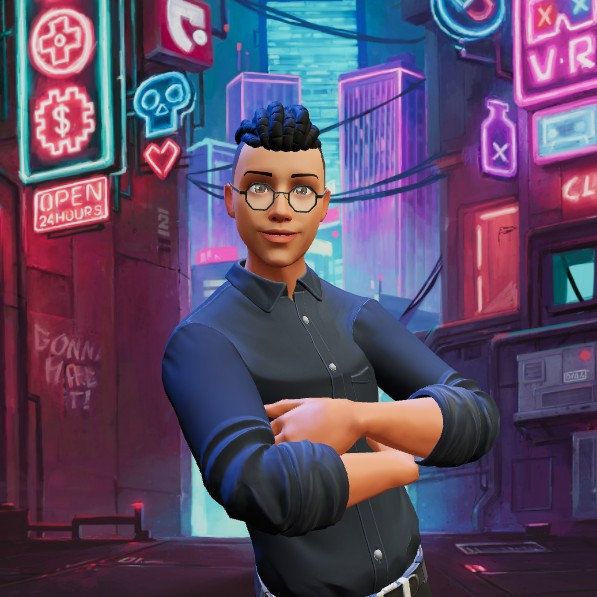

Home >> Sobre o Autor
Vamos falar sobre mim!
Fala pessoal, me chamo Gustavo Baptista, eu desde cedo sempre tive muito interesse nesse ramo. Apesar disso,gosto muito de coisas antigas: músicas, roupas, jogos, etc. Atualmente sou técnico articulado Firjan SENAI, e fiz esse site como uns dos desafios que me foram propostos. Espero ter esclarecido alguma coisa!